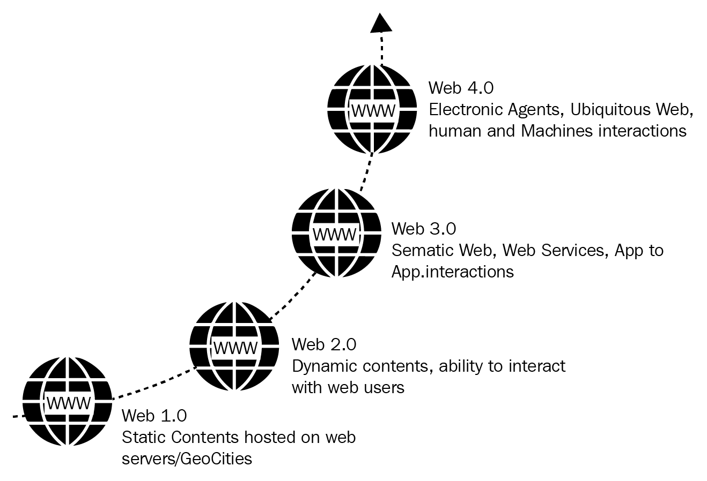

This was a read only web.
Static websites where users could only read content. No interactions, commenting or generated content.
Characteristics: Static pages, framesets, guest books, HTTP.
This was a read-write web.
Dynamic interactive websites where users participate, create content and collaborate. Social media, blogs, wikis, e-commerce.
Characteristics: User generated content, API's, social networking.
The Semantic and decentralized web
Aimed to make data machine readable and interconnected. Focuses on AI, block chain, decentralization and read-write own web.
The symbiotic web
The "always-connected" web where the digital and physical worlds merge AI assistants, IoT, wearable tech and intelligent agents.
Characteristics: Highly intelligent systems, real-time interaction, Integarion with smart devices.
